MA AL-ISLAM JAMSAREN
Surakarta
Surakarta


Kepala MA Al-Islam Jamsaren Surakarta
Assalamu'alaikum Warahmatullahi Wabarakatuh. Selamat datang di MA Al-Islam Jamsaren Surakarta. Sebagai lembaga pendidikan Islam, kami berkomitmen membentuk generasi berkarakter islami, unggul dalam akademik, dan berwawasan global. Didukung tenaga pendidik profesional, fasilitas yang memadai, serta lingkungan belajar yang kondusif, kami menghadirkan pendidikan terbaik bagi putra-putri bangsa.
Kami tidak hanya fokus pada kecerdasan intelektual, tetapi juga menanamkan nilai-nilai keislaman, kemandirian, dan akhlakul karimah sebagai bekal menghadapi tantangan zaman. Mari bersama membangun generasi cerdas, berakhlak mulia, dan siap berkontribusi bagi agama, bangsa, dan negara.
Muchammad Syafii, S.Pd., M.Pd. adalah pendidik profesional yang berdedikasi dalam pengembangan kurikulum, pembinaan karakter, dan peningkatan kompetensi guru. Berpengalaman di dunia pendidikan Islam, beliau berkomitmen membangun lingkungan belajar yang kondusif dan berlandaskan nilai-nilai keislaman untuk melahirkan generasi cerdas, berakhlak mulia, dan siap berkontribusi bagi agama, bangsa, dan negara.
MA Al-Islam Jamsaren Surakarta adalah madrasah aliyah berciri khas Islam di bawah Yayasan Perguruan Al-Islam Surakarta yang berkomitmen mencetak generasi berilmu, berakhlak mulia, dan berdaya saing global melalui integrasi nilai-nilai keislaman dan kurikulum modern.
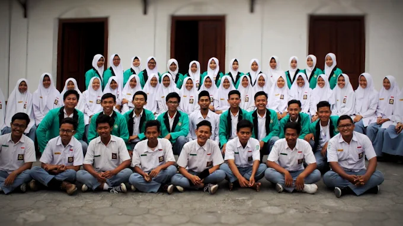
“Mewujudkan lulusan yang berilmu, berakhlaq mulia, mandiri, dan berkontribusi positif bagi umat dan bangsa.”
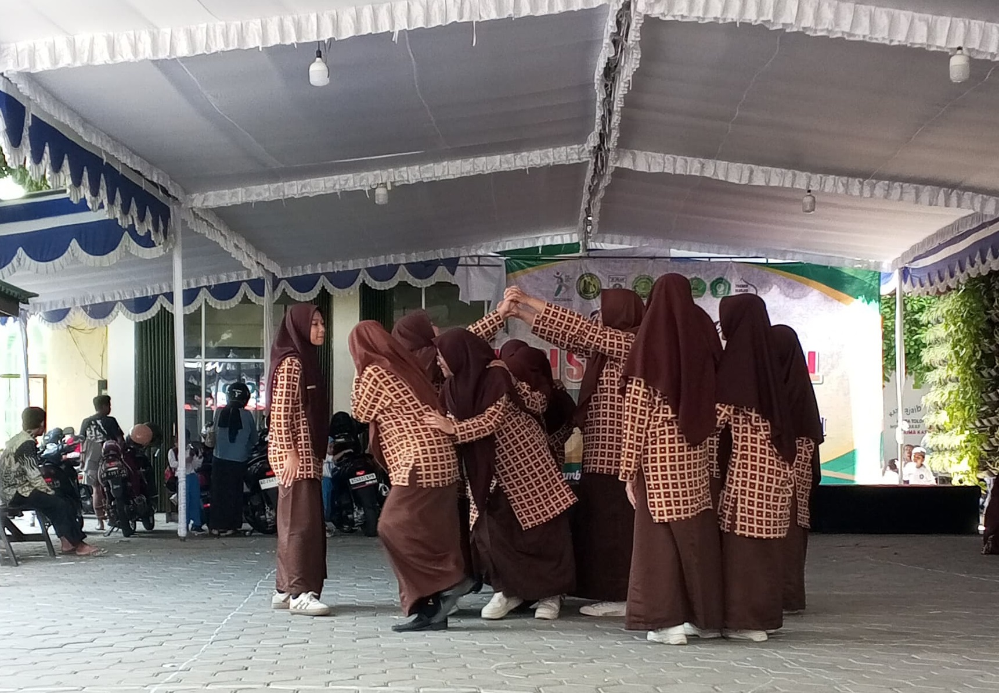
Sekolah Islam Surakarta MA Al-Islam Surakarta mengadakan kegiatan P5RA untuk mengenalkan kearifan lokal yang ada di daerah indonesia.
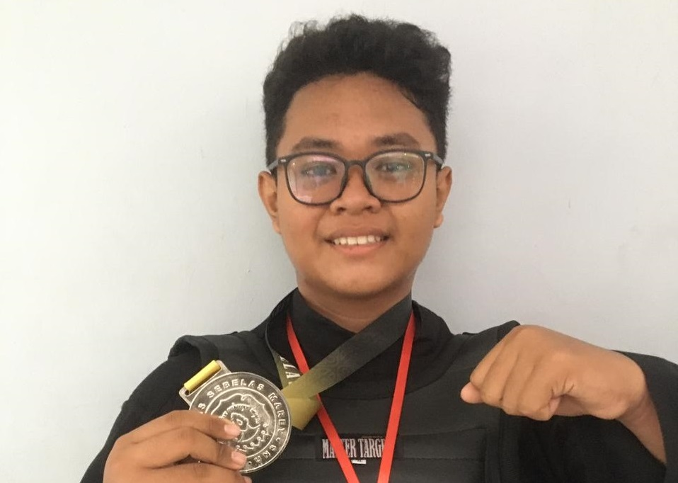
Sekolah Islam Surakarta Perwakilan kontingen MA Al-Islam Surakarta kembali mendapatkan medali pada kejuaraan Tapak Suci UNS Open.
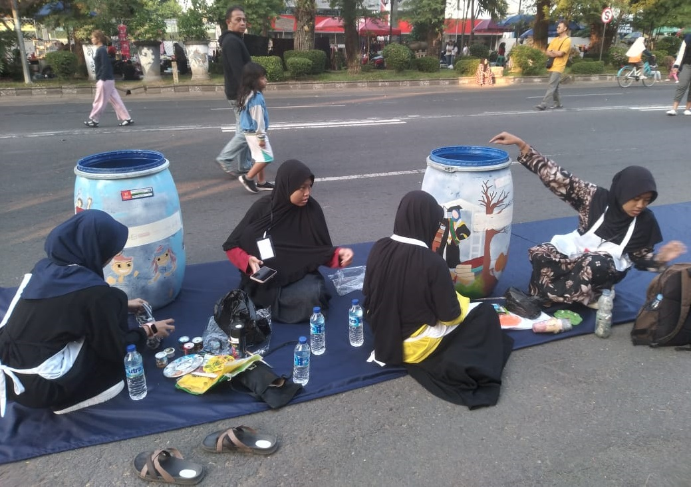
Sekolah Islam Surakarta Siswa MA Al-Islam surakarta mengikuti lomba melukis tong sampah yang diadakan di Car Free Day.
Fasilitas lengkap disiapkan untuk menciptakan lingkungan belajar yang nyaman, modern, dan mendukung pengembangan minat serta bakat siswa.
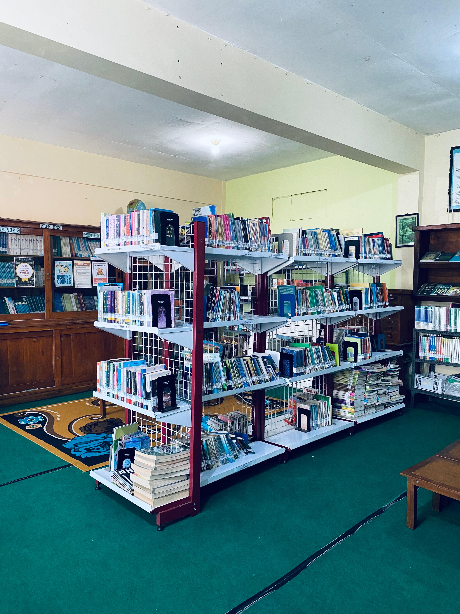
Menyediakan berbagai koleksi buku untuk mendukung minat baca, menambah wawasan, serta menunjang proses belajar siswa.

Menjadi tempat praktik untuk memahami konsep-konsep kimia melalui percobaan langsung secara aman dan terarah.

Mendukung pembelajaran biologi melalui pengamatan, eksperimen, dan penelitian sederhana tentang makhluk hidup serta lingkungan.
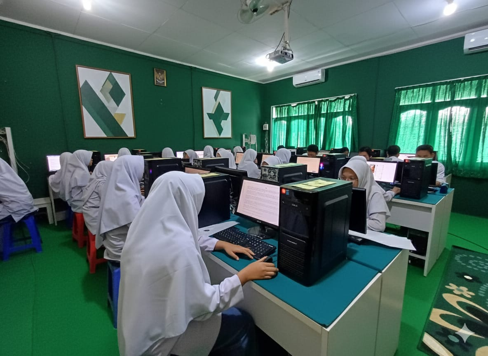
Membekali siswa dengan keterampilan teknologi informasi, pengoperasian komputer, serta pemanfaatan software untuk pembelajaran.
Ruang belajar yang nyaman dan modern, dilengkapi full AC, Smart TV, serta sistem speaker untuk mendukung proses pembelajaran yang interaktif, efektif, dan menyenangkan.
Menjadi pusat kegiatan keagamaan dan pembinaan akhlak, tempat siswa melaksanakan ibadah serta kegiatan keislaman lainnya.
Fasilitas terbuka untuk mendukung berbagai aktivitas olahraga, meningkatkan kebugaran, serta membangun sportivitas siswa.
Tenaga pendidik profesional dan berdedikasi.
Guru Matematika — 10 tahun pengalaman
Guru Biologi — 8 tahun pengalaman
Guru Kimia — 5 tahun pengalaman
Guru Bahasa Indonesia — 12 tahun pengalaman
Guru Ekonomi — 7 tahun pengalaman
Guru PJOL — 4 tahun pengalaman
Guru PKN — 11 tahun pengalaman
Guru Sosiologi — 10 tahun pengalaman
Berbagai kegiatan untuk mengembangkan minat dan bakat siswa.

Mengembangkan karakter, kemandirian, dan jiwa kepemimpinan.
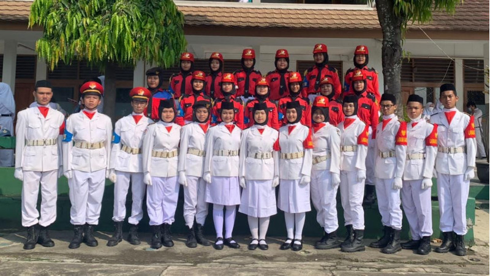
Melatih kedisiplinan, tanggung jawab, serta kekompakan dalam baris-berbaris.

Menumbuhkan kepedulian terhadap alam melalui kegiatan olahraga dan petualangan.
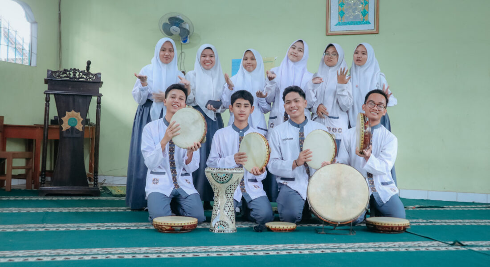
Menyalurkan bakat dalam musik islami, vokal, dan seni tradisional.

Menumbuhkan keimanan dan akhlak mulia melalui kegiatan keagamaan dan dakwah.
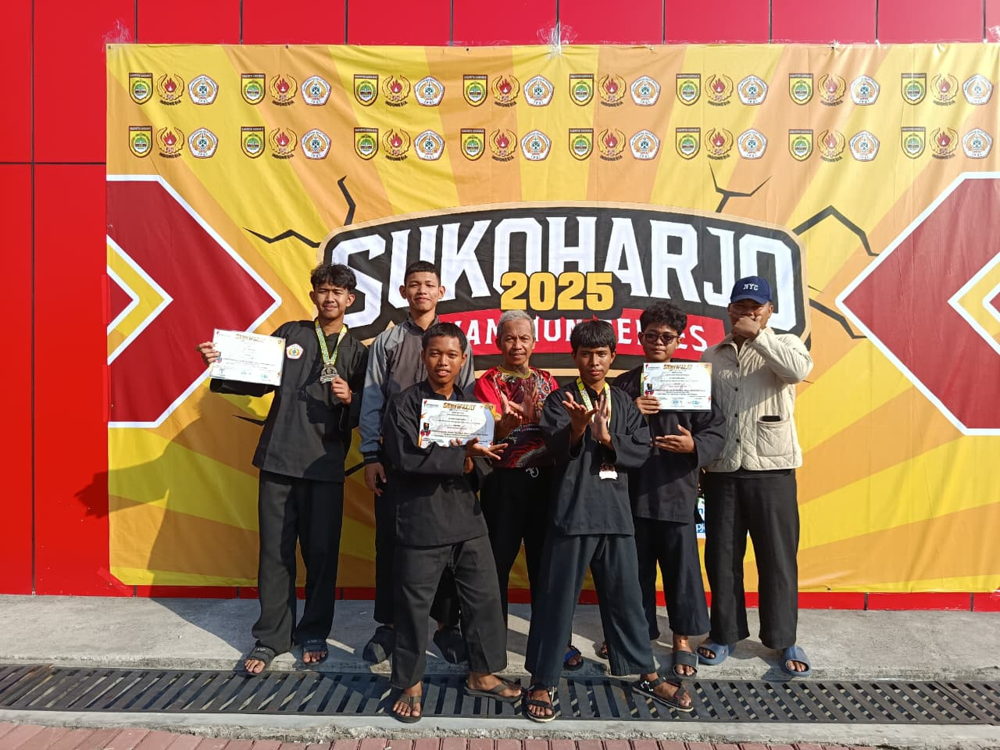
Melatih keterampilan bela diri, kedisiplinan, dan sportivitas.

Mengasah kemampuan teknik, kerjasama tim, dan semangat sportivitas.
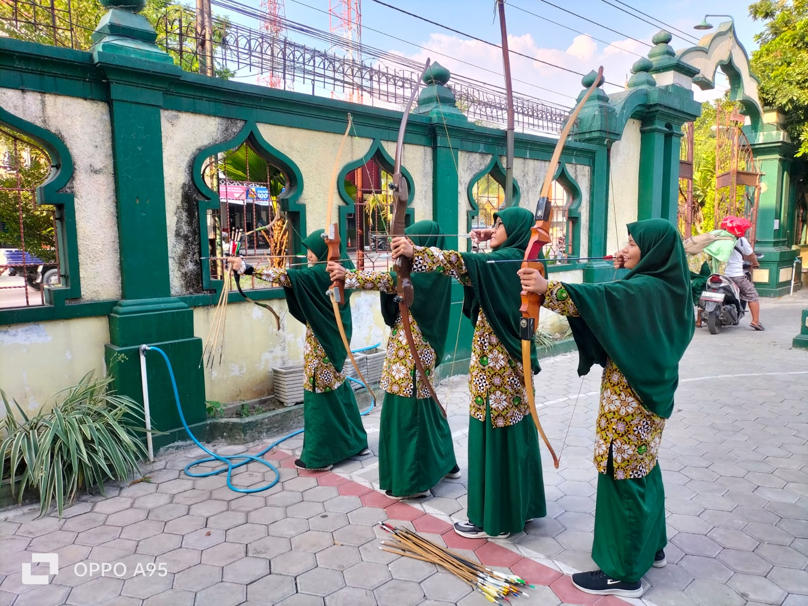
Melatih fokus, ketenangan, dan ketepatan melalui olahraga panahan.
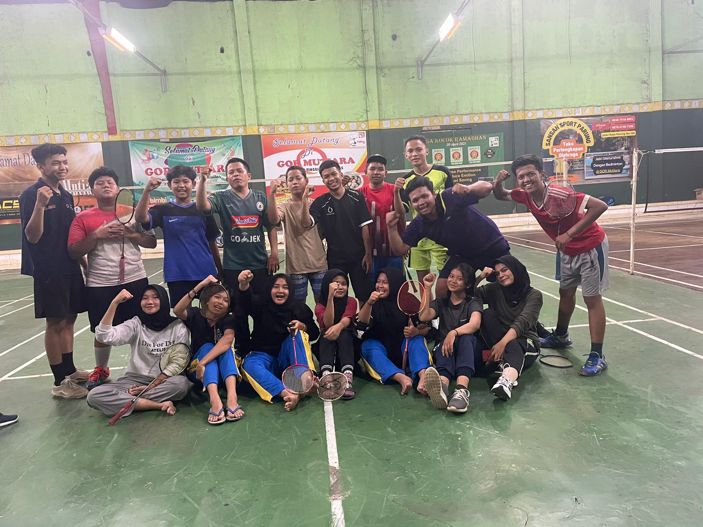
Melatih ketangkasan, kecepatan, dan sportivitas melalui permainan yang menyenangkan.
Temukan informasi terbaru mengenai penerimaan murid baru, organisasi siswa, serta jadwal kegiatan akademik di MA Al-Islam Jamsaren.

Penerimaan Murid Baru untuk Tahun Ajaran 2025/2026 telah dibuka. Daftarkan putra-putri Anda segera dan raih masa depan gemilang bersama kami!
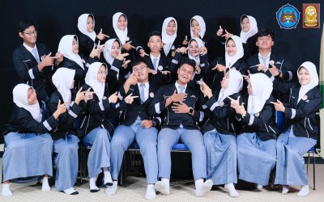
OSIS MA Al-Islam menjadi wadah bagi siswa untuk mengembangkan kepemimpinan, kreativitas, dan solidaritas melalui berbagai kegiatan positif di lingkungan madrasah.
Informasi jadwal libur semester bagi seluruh siswa dan guru MA Al-Islam Jamsaren. Gunakan waktu libur untuk beristirahat dan mempersiapkan diri menghadapi semester berikutnya.